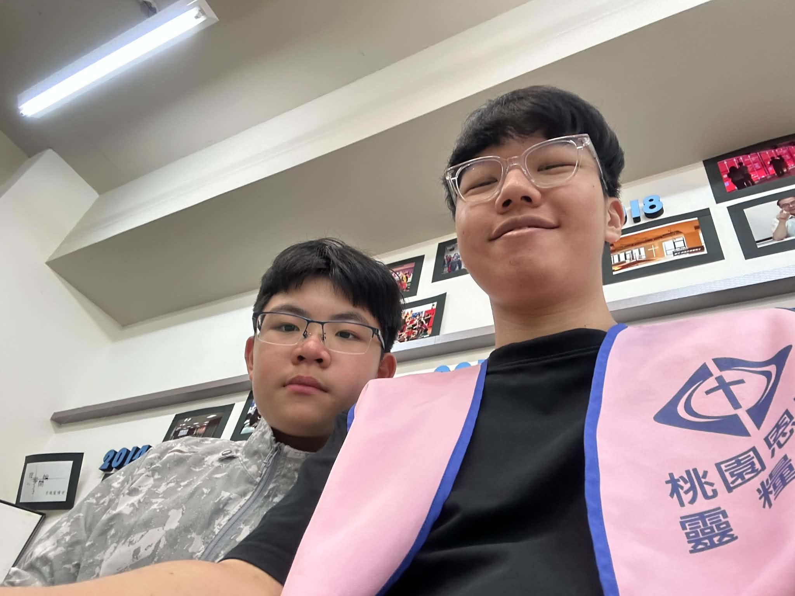

關於我

大家好，我是一名淡江大學的學生，目前正在接觸HTML、CSS以及其他網頁相關技術。
雖然剛開始學習網頁設計，但我希望可以慢慢做出屬於自己的網站，也想把課堂上學到的東西實際運用出來。
我的興趣
- 聽音樂
- 看Netflix和YouTube旅遊頻道
- 打桌球和擊劍
- 喜歡看體育賽事
最近的學習進度
| 階段 | 目標 | 目前進度 |
|---|---|---|
| 階段一 | 顧好GPA | 持續維持中 |
| 階段二 | 提升英文能力 | 多益600分 |
| 階段三 | 準備申請資料 | 進度0，還在增加經歷中 |
我的小目標
- 能利用課堂所學，為自己架設個實用的網站
- 順利完成畢業專題
- 順利通過大三的每一堂課